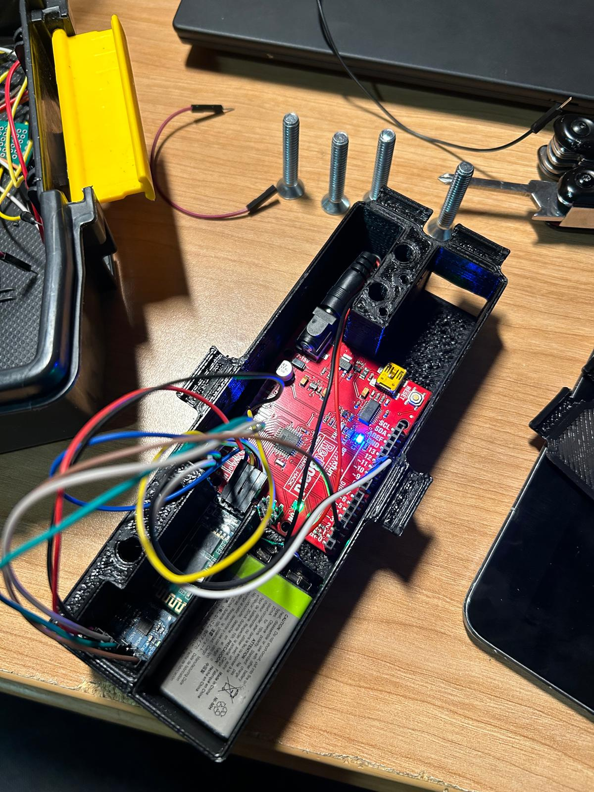

OZAN BULUT GÜREŞCIER
Mechanical Engineering Portfolio
Mechanical Engineering Portfolio
Hello, I am Ozan Bulut Güreşcier, and I am studying Mechanical Engineering with the Technology, Management and Design minor at NYU Tandon School of Engineering. As an engineering student, I am always interested in design challenges that push me to use my engineering knowledge and find creative solutions to different problems. In this portfolio, I will be showcasing various projects I have taken part in throughout my engineering student life with descriptive images, project explanations, challenges, how I overcame those challenges and results of each project.


